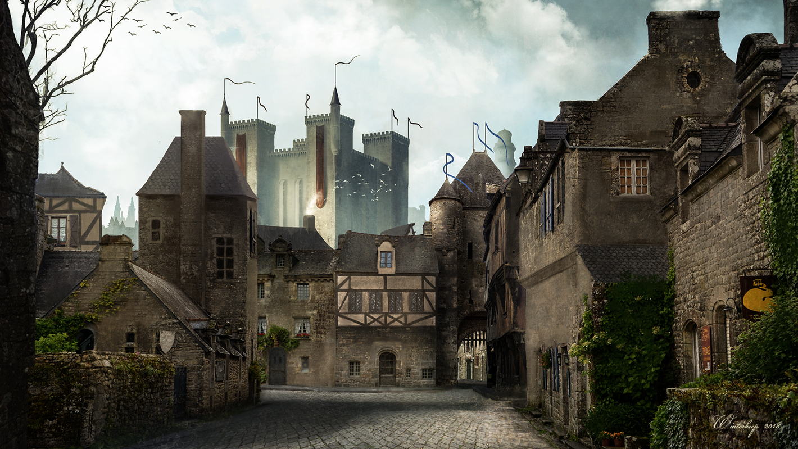

Shadowy Times
Be it on the road to Last Light Inn, or wandering through the woods of wacky Bright Falls, October is defenetly for spooky nights and moonlit dangers; there was something fitting in playing both Act II of Baldur's Gate and the final episodes of the original Alan Wake, almost at the same time, all surrounded by light versus shadows symbolism.
Now, the titular city creeps around the corner, and my curiosity around Alan Wake II has transform into anticipation.